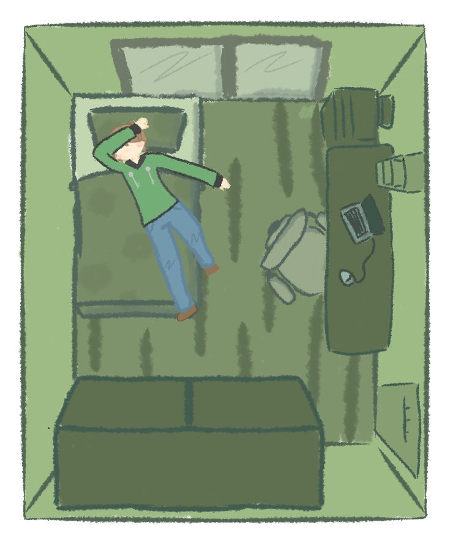

I was just lying in my room, exhausted after a long day at school, when the news ticker suddenly flashed across the screen. They claimed entire sections of the northern forest were simply... gone. It has to be a glitch, right? Things like this don't just happen out of nowhere...
Nobody seems to know what's really going on. My friends in the chat are panicking, but some people online are saying it's all fake news. Then I noticed something strange right outside my own window... something green that definitely shouldn't be there.

🛏️ Room.png Image